Captured 16 October 2026 from the running Development app (guest account, 60 seeded days), at 1366×768 (laptop) and 390×844 (phone). Numbers on the marks are the option numbers below. what was therewhat replaced it
| Measured (Playwright) | Before | After |
|---|---|---|
| Layout shift on load, laptop / phone (CLS) | 0.11 / 0.20 on every page | 0.00–0.01 / ≤ 0.04 |
| Live page height on a phone | 3,085 px | 1,440 px |
| Live panels clipping their content at 1366×768 | 6 | 1 (In frame: a 12-class list scrolls) |
| History at 1366×768 | page scrolls 365 px | fits; the sessions list scrolls in its panel |
| Controls under 24 px (History) | 12 | 0 |
| Font sizes on History | 14 (10–27 px, word cloud included) | 5 outside the word cloud: 11, 12, 14, 16, 22 px |
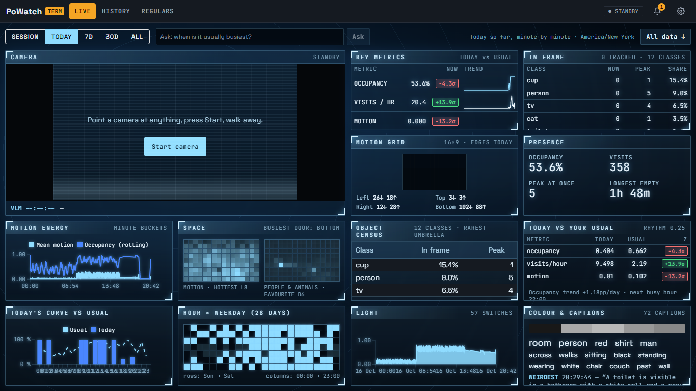
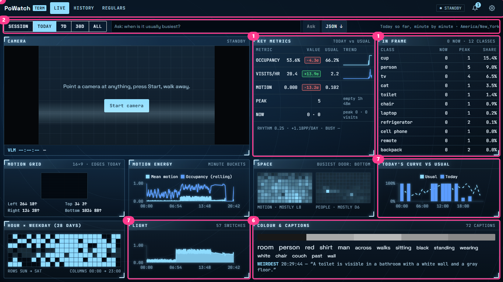
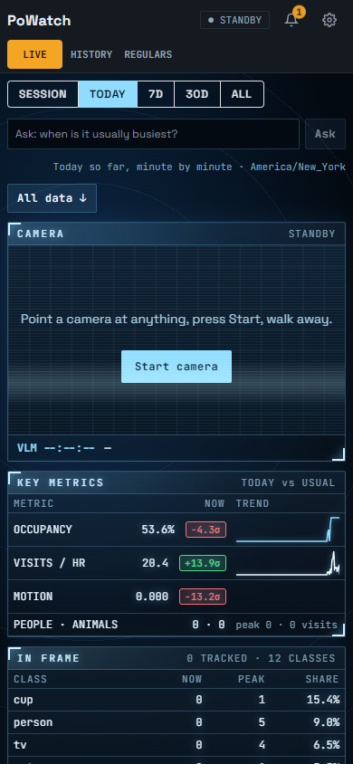
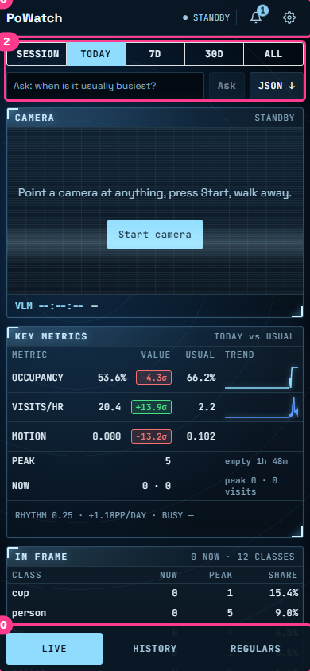
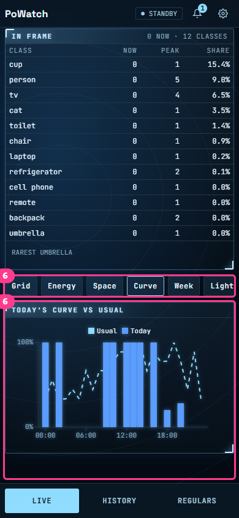
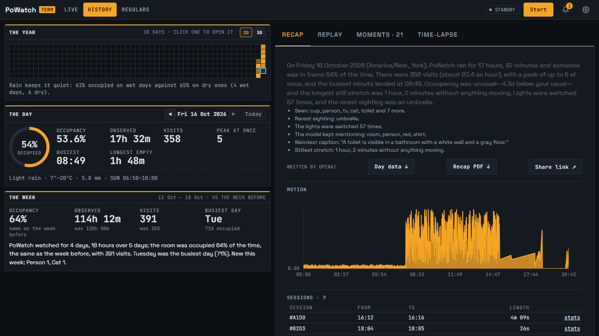
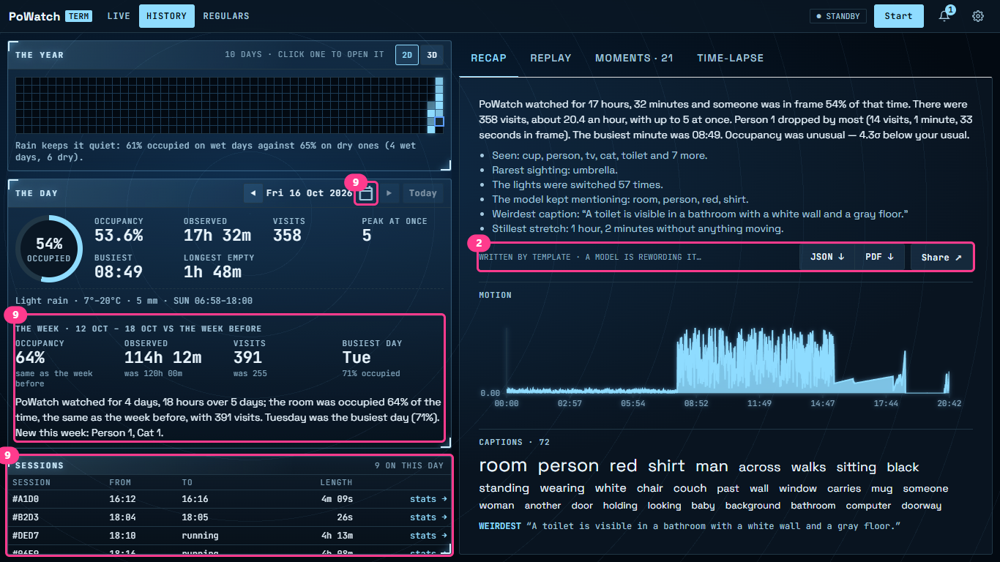
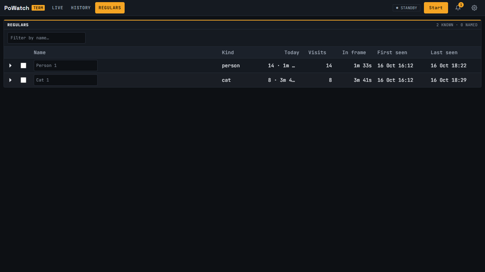
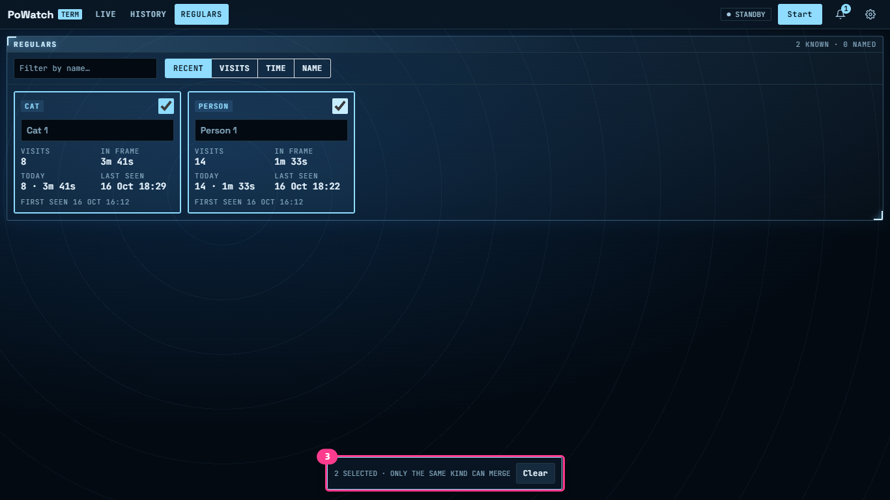
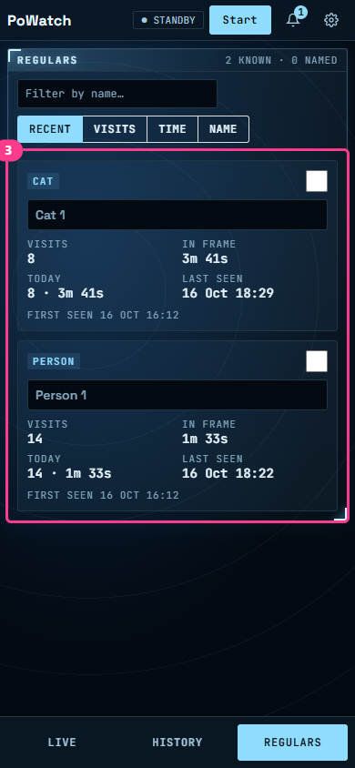
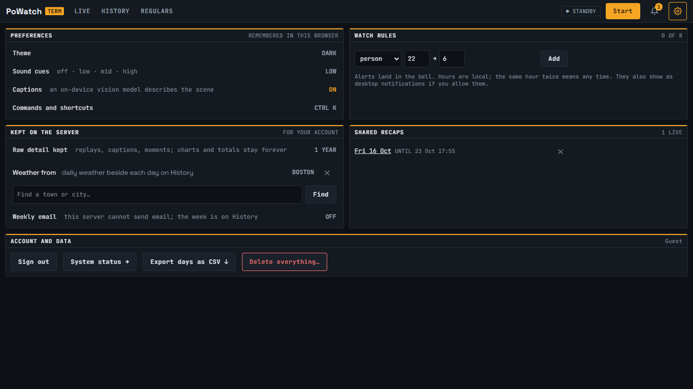
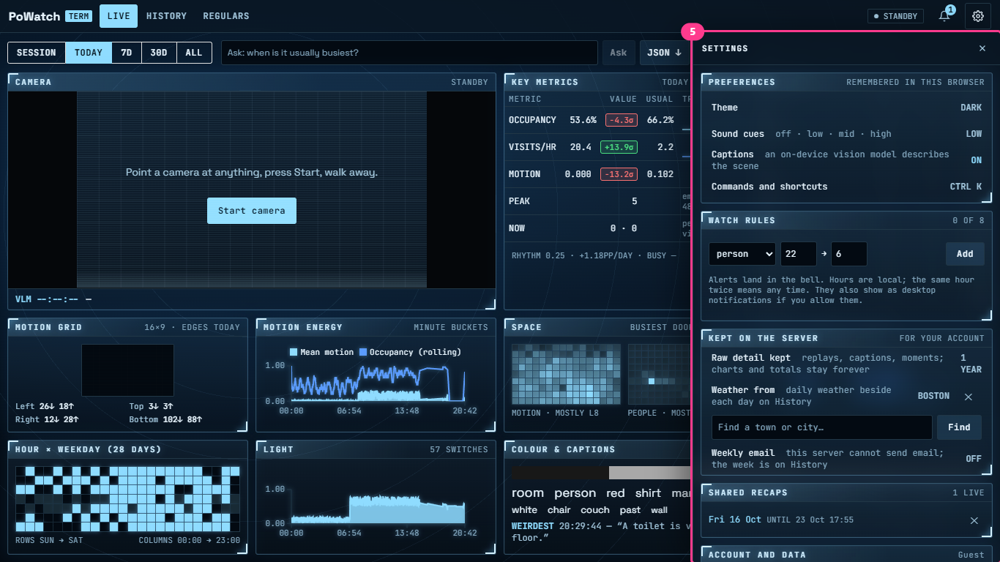
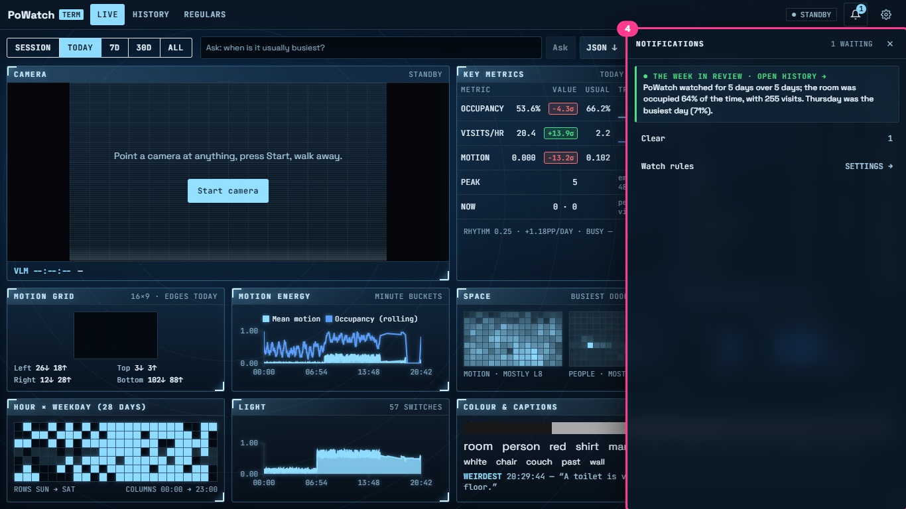
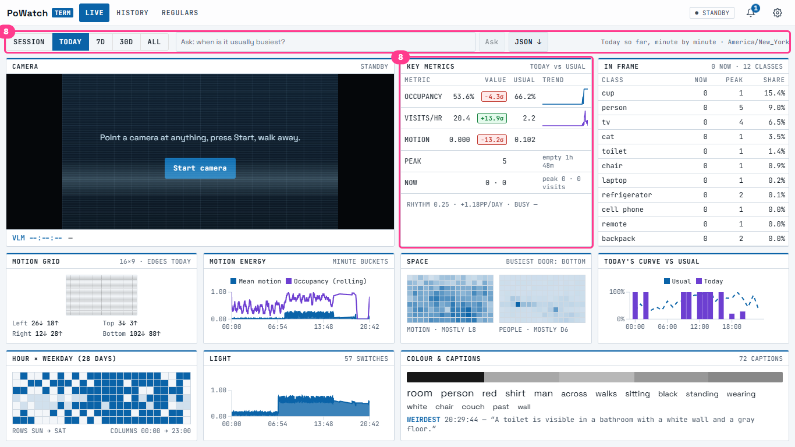